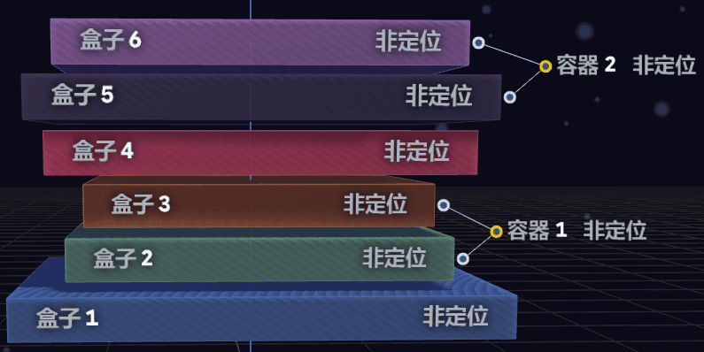
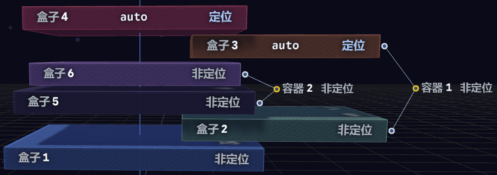
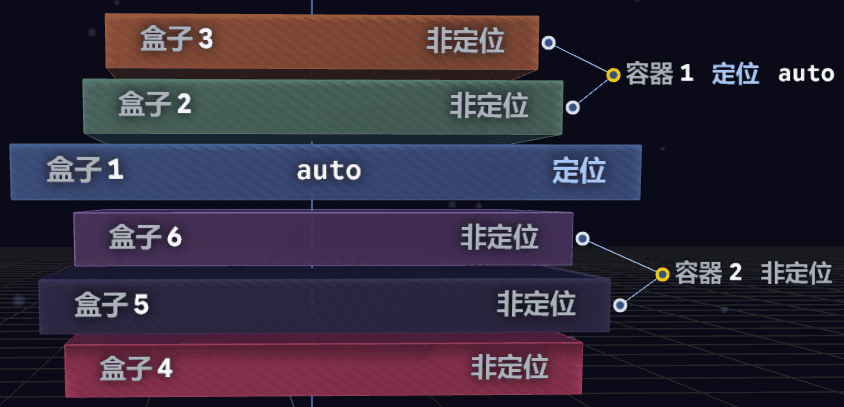
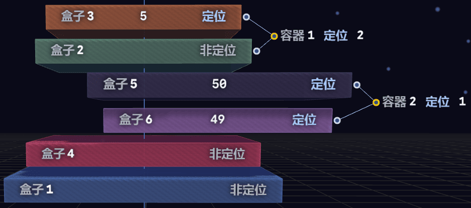

层叠上下文原创
作者： 苏扬
日期： 2026年11月26日

作者： 苏扬
日期： 2026年11月26日
层叠上下文的层叠也可叫堆叠，指的是元素在页面上的渲染顺序，翻译为Stacking；而层叠与继承中的层叠是指CSS规则的优先级，翻译为Cascading。二者不是一个概念。
在页面上，元素有自身的宽width和高height，相当于X轴和Y轴。现在，想象一条从元素到用户眼睛的轴，这条轴就是Z轴，元素在Z轴上有一个位置，这个位置就是层叠顺序。
当这些元素重叠时，谁会遮住谁？谁在上离眼睛近？谁在下离眼睛远？这里面有一套规则，即层叠规则，而层叠上下文是这套规则的一部分。
我们在编程领域经常会听到上下文这个词，其实它和现实生活中的上下文是一样的意思，指的是情境，没有具体的情境，很多事物都毫无意义。
举个生活中的例子：我拿了比赛第1名，如果只有这么一句，第1名是没有意义的，因为缺少情境。这个第1名，是什么比赛的第1名？是校运会的第1名，还是亚运会的第1名？或者是奥运会的第1名？是游泳还是短跑？没有这些具体的信息，名次毫无意义。这些具体的信息，共同构成了情境，也就是上下文。
编程领域，也是如此。比如，某个元素顺位是5，是在全部页面元素中排第5，还是在某个容器内排第5？不同的上下文，5的意义是不一样的。
简单地说，层叠上下文的意思就是：元素的层叠顺序到底是在哪个范围内进行比较。
在以下情况下，元素会创建一个新的层叠上下文：
假设有如下的HTML结构：
<div class="盒子 盒子1"></div>
<div class="容器 容器1">
<div class="盒子 盒子2"></div>
<div class="盒子 盒子3"></div>
</div>
<div class="盒子 盒子4"></div>
<div class="容器 容器2">
<div class="盒子 盒子5"></div>
<div class="盒子 盒子6"></div>
</div>
在下面的三维场景示例中，调整各种属性，观察层叠顺序的变化，了解层叠规则。
尤其要注意容器的参数对其内部元素的影响。
默认情况下，源代码顺序越靠后，则层叠顺位越高越靠近眼睛。

所有元素都是默认状态非定位时，层叠顺序非常简单：谁的代码在后，谁就在上方。
如果有定位元素，且z-index未写，或者设置为auto，则不会创建新的上下文。这种情况下，规则依然简单：定位元素高于非定位元素。

所有定位元素都在上方。当二者均为定位元素时，代码在后的更高。
此外，祖先元素的定位会抬高所有后代元素的层叠顺序，即使后代元素是非定位的。

容器1定位后，所有容器1内部盒子的层叠顺序均被提高，即使它们都是非定位的。
当一个元素定位，并且z-index设置为数值，就会创建一个新的层叠上下文，这个上下文会影响此元素内部的所有后代元素。

盒子5是定位的，并且z-index: 50，为什么不在最上方呢？因为盒子5的父元素容器2创建了一个新的层叠上下文，此时盒子3的z-index就只在容器2内部进行比较，与容器2外部的元素无关，哪怕把盒子5的z-index写到99999也是一样的。